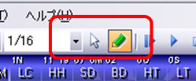
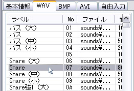

| 便利な使い方 |
|---|
| チップをレーンに割り付ける |
各レーンに、よく使うチップを「割り付ける」ことができます。チップをレーンに割り付けると、現在選択しているチップより割り付け済みのチップのほうが優先されるようになります。 この場合、リストでどの番号の行を選択していても、レーンを左クリック（チップ配置）すると優先されているレーン割り付けチップの番号が譜面に描画されます。
１つのレーンにつき、表チャンネル用と裏チャンネル用の２つのチップを割り付けることが出来ます。
① 編集モード（ ）にします。
）にします。

② 割り付けたいチップをリストから選択します。

③ 割り付けたいレーンの上端（レーン名の辺り）で左クリックします。（裏チャンネルに割り当てる場合は Ctrl キーを押しながら左クリックします。）
① 編集モード（ ）にします。
）にします。
② 割り付けを解除したいレーンの上端（レーン名の辺り）で右クリックします。（裏チャンネルを解除したい場合は Ctrl キーを押しながら右クリックします。）